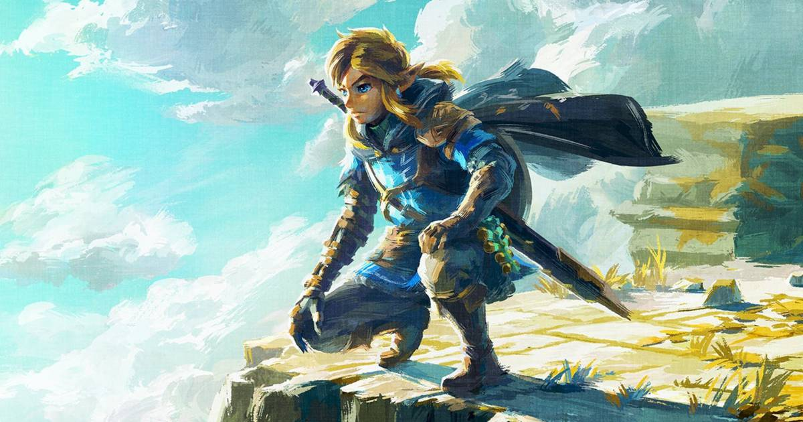

O Nintendo Switch 2 me fez lembrar o porquê The Legend of Zelda: Breath of the Wild e Tears of the Kingdom são duas obras-primas
Os momentos que vivi com The Legend of Zelda: Breath of the Wild e The Legend of Zelda: Tears of the Kingdom são simplesmente inesquecíveis. Essas duas obras-primas do Nintendo Switch são algumas das aventuras mais divertidas que já tive, e eu as apreciei profundamente do início ao fim, especialmente o segundo jogo. Até decidi começar o jogo novamente após terminá-lo pela primeira vez, porque teve um impacto profundo em mim e me deixou com vontade de mais.
Ler mais
Konami contrata mesmas modelos que estamparam pôsteres de Metal Gear Solid 3 para refazer fotos 20 anos depois
Metal Gear Solid 3 de 2004 era recheado de referências ao mundo real, ainda que estas não condissessem com o cenário de 1960 em que o jogo se passa. Algumas das mais lembradas pelos fãs são os pôsteres de modelos japonesas localizados em certas áreas internas do game.
Ler mais